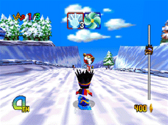
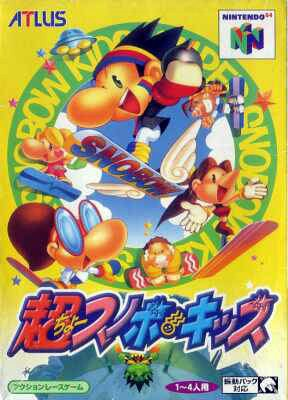
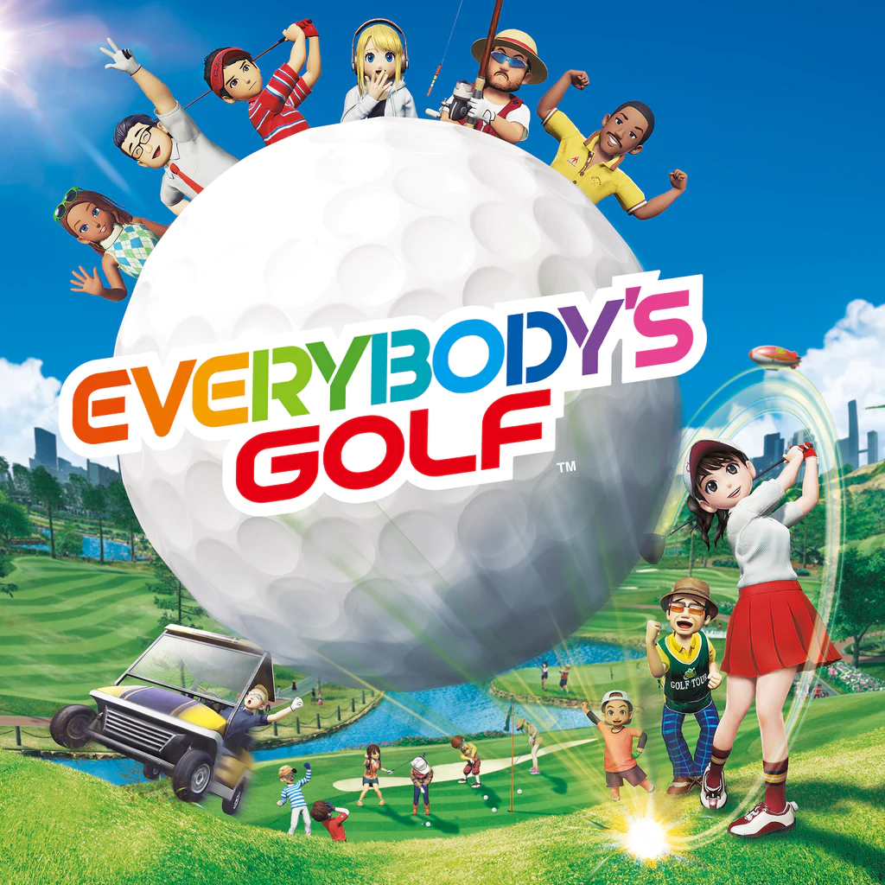
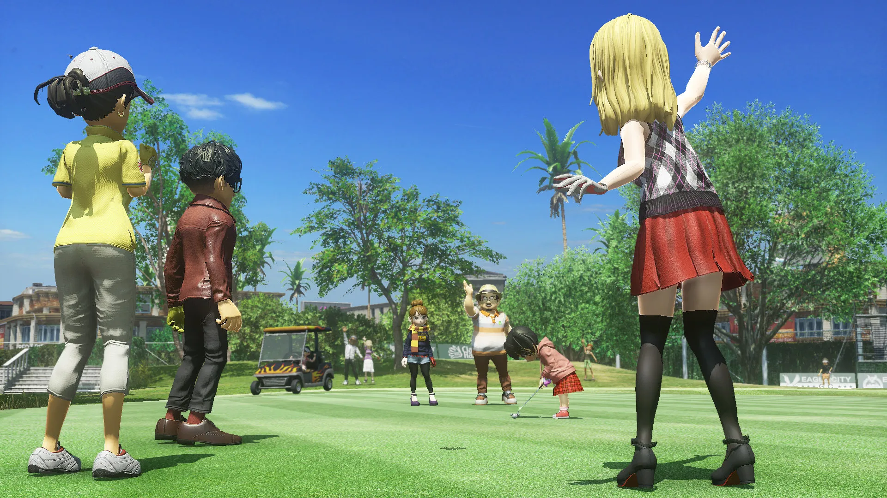

Snowboard Kids is certainly a Kart Racer in its simplicity, but the exceedingly tight glide down the series’ mountaintops without the common need to hold down an acceleration button and simply accruing momentum from the descent lends the games a distinct liveliness.
The player isn’t doing much input, so the level design instead becomes the focal point of the games hook; mastery of the track becomes the aim, not mastery of the control. In this way, whilst panned for its simplicity at launch, Snowboard Kids is a distinct “less is more” type of game in a genre characterized by chaos and hidden depth.
Snowboard Kids big-nosed ‘chibi’ style characters set the tone for the gameplay with their non-serious, perhaps odd looking design akin to a Winter Olympics mascot. Textures are correspondingly intense bright with multicolored text. It doesn’t try for detail and simply revels in its cartoon-come-alive feel. Even in the below stage, Sunny Mountain the purples in the water and the snow against the lightly gradient blue sky complete the color palette without a need to adhere to believability. This is where the N64 visuals shined!

The soundtrack makes incredible use of the sometimes restrictive MIDI format with catchy loops. Notably, Big Snowman from Snowboard Kids 1 has a dominant synth that captures the simple joy of the game in its endlessly hummable melody. None of the tracks are dense underground techno like WipE’out or the characteristic big band tracks of Mario Kart, but their simplictly aligns with the games own. Both games soundtracks also recently released on Spotify, and are perfect easy listening. Personal picks are: Board Shop (SK1), Big Snowman (SK1), Grass Valley (SK1), Character Select (SK2), Turtle Island (SK2), and Starlight Highway (SK2).
Mechanically, there are areas where it still has a leg up on Mario Kart. There are still item boxes, but Snowboard Kids cleverly divides them into defensive and offensive and can only be collected if the amount of coins needed is collected. As such, there are situations when one must decide whether to take the offensive route or defensive route. Rarely are you completely stopped by an offensive item either, but it does cause a penalty to your speed, removing some of the frustrating blue-balls downtime associated with Mario Kart. Rather than utter randomness, Snowboard Kids opts for a small (and perceptible to children) tactical depth through its items. Of course, within its Snowboarding heritage it must have a form of tricking, which adds to the risk-reward of any given race as small speed boosts can be gained from successful, high risk tricks when jumping, as well as the ever needed (although ever plentiful) coins used to purchase items, further adding to the reward for skilled play. It may not be as complex as 1080 Snowboarding, but the inputs for different tricks add a sense of success and agency that the simple press of a bumper doesn’t have in Mario Kart. Additionally, tricking in Snowboard Kids 2 allows for the blocking of offensive items when carefully timed, an intensely gratifying manuever that further justifies the mechanical implementation of tricking in a way that Kart Racers often do.
For those weary of the Kart Racer genre, Snowboard Kids is a rewarding play despite its simplicity. It offers all the gratifying aural, visual flair one would want in a Snowboarding or Skateboarding game whilst attempting to evolve a formula that at its time was in its infancy. Due to its poor reception and sales, many of these innovative mechanics that differentiate it are isolated to Snowboard Kids. For those nostalgic for it, soaring down its slopes now with the ability to understand how it still stands apart among its now-adult peers parallels the critical understanding of Snowboard Kids, and for all, the series’ elegance in its uncomplicated sophistication revitalizes the childhood mystique that came with playing a new video game.

Merry Christmas and Happy New Year!
 What was most surprising about Death Stranding was its player interactivity. Without sight of each other, players collaboratively can build a world that makes Sam Porter Bridges’ job easier. It’s a nuanced means of communicating its often suffocatingly direct message about connection and is an elegant means of creating a “live game” without being a Battle Royale with A season pass system. Now that the sequel is on the horizon, it begs the question of how can I game on the forefront of a “live” experience continue with the same gameplay and artistic vision once it no longer is live?

Everybody’s Golf (2017) is a revival of Sony’s console spanning franchise that first started on the original PlayStation and has had multiple entries on all their platforms since and marked a turning point to being a live game for the series. It perhaps serves as the most apt warning of what the twilight of a live game looks like.
The reboot of the series still maintains its essence of ‘three-bar’ golf gameplay that spurred the existence of Mario Golf, but now takes the “Everybody” in its title to a new height, with open courses that allow you to freely drive around with friends and stop to fish whenever. Sure, you can play golf exclusively but there is no urgency to do so, it provides a pace and style for everybody, a simple game to relax with friends listlessly. If you go to the PlayStation store, you’ll still see this advertised as a feature, definitively the largest new feature of the franchise. However, as of September 30th, 2022, due to the servers shutting down, it is entirely unplayable.
Yes, the core singe player gameplay is still fun, but a core component is noticeably gutted from the experience, something that players are likely to be particularly sore about when they see the huge gates still advertising it on the game’s hub world, Golf Island. What remains could be considered a different game entirely, a stripped down no bells and whistles golf game that is still playable but lacking its soul, especially considering the now absent franchise tie ins such as a live Chocobo as a golf kart. Now you are taunted with a pathetic racetrack on golf island to test out golf karts with none of the memorable functionality of riding with friends they were intended for, and a minuscule fishing compendium that will never see completion due to many fish being locked behind the Open Golf mode.
What’s clear is that developers have most certainly learnt that once a live game shuts down, it should still maintain some level of functionality; it’s only fair to the consumer to ensure that, and nowadays games tend to achieve at least that. However, it remains to be seen how a developer might ensure the longevity of all the content the game was built to have, not only for fairness, but to ensure their art doesn’t decay into something else entirely.
Is Everybody’s Golf redundant then? Hardly. But its hard to say if its *really* Everybody’s Golf.